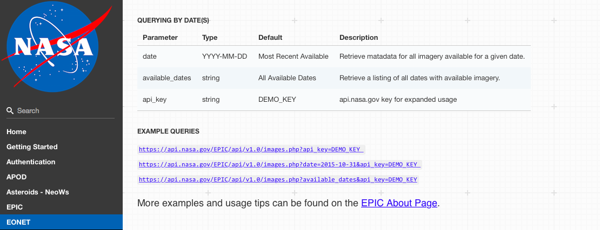
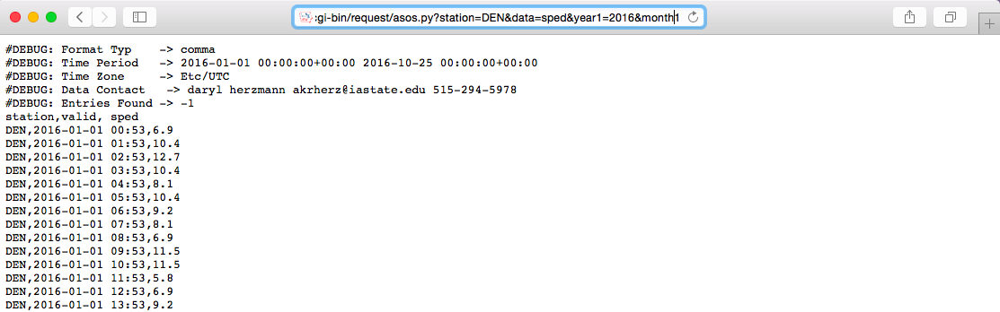
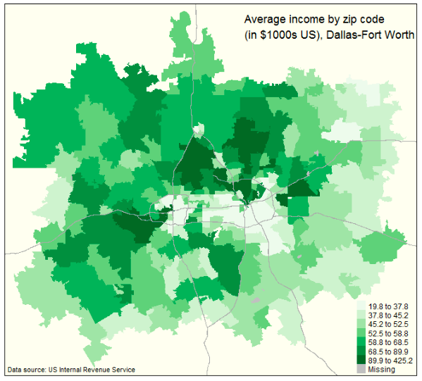
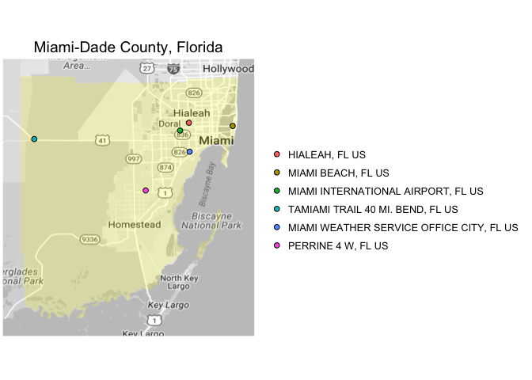

Chapter 10 Entering and cleaning data #3
Download a pdf of the lecture slides covering this topic.
10.1 Pulling online data
10.1.1 APIs
APIs are “Application Program Interfaces”. An API provides the rules for software applications to interact. In the case of open data APIs, they provide the rules you need to know to write R code to request and pull data from the organization’s web server into your R session. Often, an API can help you avoid downloading all available data, and instead only download the subset you need.
The basic strategy for using APIs from R is:
- Figure out the API rules for HTTP requests
- Write R code to create a request in the proper format
- Send the request using GET or POST HTTP methods
- Once you get back data from the request, parse it into an easier-to-use format if necessary
Start by reading any documentation available for the API. This will often give information on what data is available and how to put together requests.

Source: https://api.nasa.gov/api.html#EONET
Many organizations will require you to get an API key and use this key in each of your API requests. This key allows the organization to control API access, including enforcing rate limits per user. API rate limits restrict how often you can request data (e.g., an hourly limit of 1,000 requests per user for NASA APIs).
You should keep this key private. In particular, make sure you do not include it in code that is posted to GitHub.
The riem package, developed by Maelle Salmon and an ROpenSci package, is an excellent and straightforward example of how you can use R to pull open data through a web API.
This package allows you to pull weather data from airports around the world directly from the Iowa Environmental Mesonet.
To get a certain set of weather data from the Iowa Environmental Mesonet, you can send an HTTP request specifying a base URL, “https://mesonet.agron.iastate.edu/cgi-bin/request/asos.py/”, as well as some parameters describing the subset of dataset you want (e.g., date ranges, weather variables, output format).
Once you know the rules for the names and possible values of these parameters (more on that below), you can submit an HTTP GET request using the GET function from the httr package.

When you are making an HTTP request using the GET or POST functions from the httr package, you can include the key-value pairs for any query parameters as a list object in the query argurment of the function.
library(httr)
meso_url <- paste0("https://mesonet.agron.iastate.edu/",
"cgi-bin/request/asos.py/")
denver <- GET(url = meso_url,
query = list(station = "DEN", data = "sped",
year1 = "2016", month1 = "6",
day1 = "1", year2 = "2016",
month2 = "6", day2 = "30",
tz = "America/Denver",
format = "comma"))The GET call will return a special type of list object with elements that include the url you queried and the content of the page at that url:
## List of 10
## $ url : chr "https://mesonet.agron.iastate.edu/cgi-bin/request/asos.py/?station=DEN&data=sped&year1=2016&month1=6&day1=1&yea"| __truncated__
## $ status_code: int 200
## $ headers :List of 6
## ..- attr(*, "class")= chr [1:2] "insensitive" "list"
## $ all_headers:List of 1
## $ cookies :'data.frame': 0 obs. of 7 variables:
## $ content : raw [1:239447] 23 44 45 42 ...
## [list output truncated]
## - attr(*, "class")= chr "response"The httr package includes functions to pull out elements of this list object, including:
headers: Pull out the header informationcontent: Pull out the content returned from the pagestatus_code: Pull out the status code from theGETrequest (e.g., 200: okay; 404: not found)
Note: For some fun examples of 404 pages, see https://www.creativebloq.com/web-design/best-404-pages-812505
You can use content from httr to retrieve the contents of the HTTP request we made. For this particular web data, the requested data is a comma-separated file, so you can convert it to a dataframe with read_csv:
## # A tibble: 3 x 3
## station valid sped
## <chr> <dttm> <dbl>
## 1 DEN 2016-06-01 00:00:00 9.2
## 2 DEN 2016-06-01 00:05:00 9.2
## 3 DEN 2016-06-01 00:10:00 6.9The riem package wraps up this whole process, so you can call a single function to get in
the data you want from the API:
library(riem)
denver_2 <- riem_measures(station = "DEN",
date_start = "2016-06-01",
date_end = "2016-06-30")
denver_2 %>% slice(1:3) ## # A tibble: 3 x 31
## station valid lon lat tmpf dwpf relh drct sknt p01i
## <chr> <dttm> <dbl> <dbl> <dbl> <dbl> <dbl> <dbl> <dbl> <dbl>
## 1 DEN 2016-06-01 00:00:00 -105. 39.8 NA NA NA 70 7 NA
## 2 DEN 2016-06-01 00:05:00 -105. 39.8 NA NA NA 80 8 NA
## 3 DEN 2016-06-01 00:10:00 -105. 39.8 NA NA NA 80 9 NA
## # … with 21 more variables: alti <dbl>, mslp <dbl>, vsby <dbl>, gust <dbl>,
## # skyc1 <chr>, skyc2 <chr>, skyc3 <chr>, skyc4 <chr>, skyl1 <dbl>,
## # skyl2 <dbl>, skyl3 <dbl>, skyl4 <dbl>, wxcodes <chr>,
## # ice_accretion_1hr <lgl>, ice_accretion_3hr <lgl>, ice_accretion_6hr <lgl>,
## # peak_wind_gust <dbl>, peak_wind_drct <dbl>, peak_wind_time <chr>,
## # feel <dbl>, metar <chr>10.2 Example R API wrapper packages
The tigris package is a very useful example of an API wrapper. It retrieves geographic
boundary data from the U.S. Census for a number of different geographies:
- Location boundaries
- States
- Counties
- Blocks
- Tracks
- School districts
- Congressional districts
- Roads
- Primary roads
- Primary and secondary roads
- Water
- Area-water
- Linear-water
- Coastline
- Other
- Landmarks
- Military
10.3 tigris package
The following plot is an example of the kinds of maps you can create using the tigris
package. This map comes from: Kyle Walker. 2016. “tigris: An R Package to Access and Work
with Geographic Data from the US
Census Bureau”. The R Journal. This is a great article to read to find out more about
tigris.

A number of other R packages also help you access and use data from the U.S. Census:
acs: Download, manipulate, and present American Community Survey and Decennial data from the US Census (see “Working with the American Community Survey in R: A Guide to Using the acs Package”, a book available free online through the CSU library)USABoundaries: Historical and contemporary boundaries of the United States of Americaidbr: R interface to the US Census Bureau International Data Base API (e.g., populations of other countries)
The organization rOpenSci (https://ropensci.org) has the following mission:
“At rOpenSci we are creating packages that allow access to data repositories through the R statistical programming environment that is already a familiar part of the workflow of many scientists. Our tools not only facilitate drawing data into an environment where it can readily be manipulated, but also one in which those analyses and methods can be easily shared, replicated, and extended by other researchers.”
rOpenSci collects a number of packages for tapping into open data for research. These are listed at https://ropensci.org/packages. Many of these packages are wrappers for APIs with data useful for scientific research
Some examples (all descriptions from rOpenSci):
AntWeb: Access data from the world’s largest ant databasechromer: Interact with the chromosome counts database (CCDB)gender: Encodes gender based on names and dates of birthmusemeta: R Client for Scraping Museum Metadata, including The Metropolitan Museum of Art, the Canadian Science & Technology Museum Corporation, the National Gallery of Art, and the Getty Museum, and more to come.rusda: Interface to some USDA databaseswebchem: Retrieve chemical information from many sources. Currently includes: Chemical Identifier Resolver, ChemSpider, PubChem, and Chemical Translation Service.
As an example, one ROpenSci package, rnoaa, allows you to:
“Access climate data from NOAA, including temperature and precipitation, as well as sea ice cover data, and extreme weather events”
It includes access to:
- Buoy data from the National Buoy Data Center
- Historical Observing Metadata Repository (HOMR))— climate station metadata
- National Climatic Data Center weather station data
- Sea ice data
- International Best Track Archive for Climate Stewardship (IBTrACS)— tropical cyclone tracking data
- Severe Weather Data Inventory (SWDI)
10.4 countyweather
The countyweather package, developed by a student here at CSU, wraps the rnoaa package to
let you pull and aggregate weather at the county level in the U.S. For example, you can pull
all data from Miami during Hurricane Andrew:

When you pull the data for a county, the package also maps the contributing weather stations:

The USGS also has a very nice collection of R packages that wrap USGS open data APIs, which can be accessed through: https://owi.usgs.gov/R/
“USGS-R is a community of support for users of the R scientific programming language. USGS-R resources include R training materials, R tools for the retrieval and analysis of USGS data, and support for a growing group of USGS-R developers.”
USGS R packages include:
dataRetrieval: Obtain water quality sample data, streamflow data, and metadata directly from either the USGS or EPAEGRET: Analysis of long-term changes in water quality and streamflow, including the water-quality method Weighted Regressions on Time, Discharge, and Season (WRTDS)laketemps: Lake temperature data package for Global Lake Temperature Collaboration Projectlakeattributes: Common useful lake attribute datasoilmoisturetools: Tools for soil moisture data retrieval and visualization
Here are some examples of other R packages that faciliate use of an API for open data:
twitteR: TwitterQuandl: Quandl (financial data)RGoogleAnalytics: Google AnalyticsWDI,wbstats: World BankGuardianR,rdian: The Guardian Media GroupblsAPI: Bureau of Labor Statisticsrtimes: New York Times
Find out more about writing API packages with this vignette for the httr package: https://cran.r-project.org/web/packages/httr/vignettes/api-packages.html. This document includes advice on error handling within R code that accesses data through an open API.
10.5 Cleaning very messy data
One version of Atlantic basin hurricane tracks is available here: https://www.nhc.noaa.gov/data/hurdat/hurdat2-1851-2017-050118.txt. The data is not in a classic delimited format:

This data is formatted in the following way:
- Data for many storms are included in one file.
- Data for a storm starts with a shorter line, with values for the storm ID, name, and number of observations for the storm. These values are comma separated.
- Observations for each storm are longer lines. There are multiple observations for each storm, where each observation gives values like the location and maximum winds for the storm at that time.
Strategy for reading in very messy data:
- Read in all lines individually.
- Use regular expressions to split each line into the elements you’d like to use to fill columns.
- Write functions and / or
mapcalls to process lines and use the contents to fill a data frame. - Once you have the data in a data frame, do any remaining cleaning to create a data frame that is easy to use to answer research questions.
Because the data is not nicely formatted, you can’t use read_csv or similar functions to read it in.
However, the read_lines function from readr allows you to read a text file in one line at a time. You can then write code and functions to parse the file one line at a time, to turn it into a dataframe you can use.
Note: Base R has readLines, which is very similar.
The read_lines function from readr will read in lines from a text file directly, without trying to separate into columns. You can use the n_max argument to specify the number of lines to read it.
For example, to read in three lines from the hurricane tracking data, you can run:
tracks_url <- paste0("http://www.nhc.noaa.gov/data/hurdat/",
"hurdat2-1851-2017-050118.txt")
hurr_tracks <- read_lines(tracks_url, n_max = 3)
hurr_tracks## [1] "AL011851, UNNAMED, 14,"
## [2] "18510625, 0000, , HU, 28.0N, 94.8W, 80, -999, -999, -999, -999, -999, -999, -999, -999, -999, -999, -999, -999, -999,"
## [3] "18510625, 0600, , HU, 28.0N, 95.4W, 80, -999, -999, -999, -999, -999, -999, -999, -999, -999, -999, -999, -999, -999,"The data has been read in as a vector, rather than a dataframe:
## [1] "character"## [1] 3## [1] "AL011851, UNNAMED, 14,"You can use regular expressions to break each line up. For example, you can use str_split from the stringr package to break the first line of the hurricane track data into its three separate components:
## [[1]]
## [1] "AL011851" " UNNAMED" " 14"
## [4] ""You can use this to create a list where each element of the list has the split-up version of a line of the original data. First, read in all of the data:
tracks_url <- paste0("http://www.nhc.noaa.gov/data/hurdat/",
"hurdat2-1851-2017-050118.txt")
hurr_tracks <- read_lines(tracks_url)
length(hurr_tracks)## [1] 52151Next, use map with str_split to split each line of the data at the commas:
library(purrr)
hurr_tracks <- purrr::map(hurr_tracks, str_split,
pattern = ",", simplify = TRUE)
hurr_tracks[[1]]## [,1] [,2] [,3] [,4]
## [1,] "AL011851" " UNNAMED" " 14" ""## [1] "18510625" " 0000"Next, you want to split this list into two lists, one with the shorter “meta-data” lines and one with the longer “observation” lines. You can use map_int to create a vector with the length of each line. You will later use this to identify which lines are short or long.
## [1] 4 21 21 21 21 21 21 21 21 21 21 21 21 21 21 4 21## [1] 4 21You can use bracket indexing to split the hurr_tracks into two lists: one with the shorter lines that start each observation (hurr_meta) and one with the storm observations (hurr_obs). Use bracket indexing with the hurr_lengths vector you just created to make that split.
## [[1]]
## [,1] [,2] [,3] [,4]
## [1,] "AL011851" " UNNAMED" " 14" ""
##
## [[2]]
## [,1] [,2] [,3] [,4]
## [1,] "AL021851" " UNNAMED" " 1" ""
##
## [[3]]
## [,1] [,2] [,3] [,4]
## [1,] "AL031851" " UNNAMED" " 1" ""## [[1]]
## [,1] [,2] [,3] [,4] [,5] [,6] [,7] [,8] [,9]
## [1,] "18510625" " 0000" " " " HU" " 28.0N" " 94.8W" " 80" " -999" " -999"
## [,10] [,11] [,12] [,13] [,14] [,15] [,16] [,17] [,18]
## [1,] " -999" " -999" " -999" " -999" " -999" " -999" " -999" " -999" " -999"
## [,19] [,20] [,21]
## [1,] " -999" " -999" ""
##
## [[2]]
## [,1] [,2] [,3] [,4] [,5] [,6] [,7] [,8] [,9]
## [1,] "18510625" " 0600" " " " HU" " 28.0N" " 95.4W" " 80" " -999" " -999"
## [,10] [,11] [,12] [,13] [,14] [,15] [,16] [,17] [,18]
## [1,] " -999" " -999" " -999" " -999" " -999" " -999" " -999" " -999" " -999"
## [,19] [,20] [,21]
## [1,] " -999" " -999" ""Now, you can use bind_rows from dplyr to change the list of metadata into a dataframe. (You first need to use as_tibble with map to convert all elements of the list from matrices to dataframes.)
## Warning: The `x` argument of `as_tibble.matrix()` must have unique column names if `.name_repair` is omitted as of tibble 2.0.0.
## Using compatibility `.name_repair`.
## This warning is displayed once every 8 hours.
## Call `lifecycle::last_warnings()` to see where this warning was generated.## # A tibble: 3 x 4
## V1 V2 V3 V4
## <chr> <chr> <chr> <chr>
## 1 AL011851 " UNNAMED" " 14" ""
## 2 AL021851 " UNNAMED" " 1" ""
## 3 AL031851 " UNNAMED" " 1" ""You can clean up the data a bit more.
- First, the fourth column doesn’t have any non-missing values, so you can get rid of it:
## [1] ""- Second, the second and third columns include a lot of leading whitespace:
## [1] " UNNAMED" " UNNAMED"- Last, we want to name the columns.
hurr_meta <- hurr_meta %>%
select(-V4) %>%
rename(storm_id = V1, storm_name = V2, n_obs = V3) %>%
mutate(storm_name = str_trim(storm_name),
n_obs = as.numeric(n_obs))
hurr_meta %>% slice(1:3)## # A tibble: 3 x 3
## storm_id storm_name n_obs
## <chr> <chr> <dbl>
## 1 AL011851 UNNAMED 14
## 2 AL021851 UNNAMED 1
## 3 AL031851 UNNAMED 1Now you can do the same idea with the hurricane observations. First, we’ll want to add storm identifiers to that data. The “meta” data includes storm ids and the number of observations per storm. We can take advantage of that to make a storm_id vector that will line up with the storm observations.
## [1] "AL011851" "AL011851" "AL011851"## [1] 50303## [1] 50303hurr_obs <- hurr_obs %>%
purrr::map(as_tibble) %>%
bind_rows() %>%
mutate(storm_id = storm_id)
hurr_obs %>% select(V1:V2, V5:V6, storm_id) %>% slice(1:3)## # A tibble: 3 x 5
## V1 V2 V5 V6 storm_id
## <chr> <chr> <chr> <chr> <chr>
## 1 18510625 " 0000" " 28.0N" " 94.8W" AL011851
## 2 18510625 " 0600" " 28.0N" " 95.4W" AL011851
## 3 18510625 " 1200" " 28.0N" " 96.0W" AL01185110.6 In-course exercise
10.6.1 Working with an API wrapper package
The rplos package provides a wrapper to the Public Library of Science (PLoS)’s API. PLOS
has a collection of academic journals spanning a variety of topics.
- Check out this page of documentation for this API: http://api.plos.org/solr/search-fields/ Look through the potential search terms.
- Use the
searchplosfunction to search articles in the PLoS collection for the term “West Nile”. Pull the publication date, title, abstract, article type, subject, and journal of each matching article and save the result to an R object calledwn_papers. You may find it helpful to look at the examples in the helpfile forsearchplosor the tutorial available at: https://ropensci.org/tutorials/rplos_tutorial/ - The object returned by
searchploswill be a list with two top levels,metaanddata. Confirm that this is true for thewn_papersobject you created. Look at themetapart of the list (you can use$indexing to pull this out). How many articles were found with “West Nile” in them? Does the query seem case-sensitive (i.e., do you get the same number of papers when you query “west nile” rather than “West Nile”)? - Re-run your query (save the results to
wn_papers_titles) looking only for papers with “West Nile” in the title of the paper. How many papers are returned by this query? - By default the limit of the number of papers returned by a query will be 10. You
can change this (to a certain degree) by using the
limitoption. For the call you ran to createwn_papers_titles, set the limit to the number of articles that match this query, as identified in themetaelement of the first run of the call. Check the number of rows in thedataelement that was returned to make sure it has the same number of rows as the number of articles that match the query. - Create a plot of the number of articles published per year. Use color to show which articles are Research Articles versus other types of articles.
- Determine which journals have published these articles and the number of articles published in each journal. You may notice that sometimes “PLoS” is used and sometimes “PLOS”. See if you can fix this in R to get the count of articles per journal without this capitalization difference causing problems.
- Explore the list of packages on ROpenSci, those through the USGS, and those related to the U.S. Census. See if you can identify any other packages that might provide access to data relevant to West Nile virus.
10.6.1.1 Example R code
library(rplos)
wn_papers <- searchplos(q = "West Nile",
fl = c("publication_date", "title", "journal", "subject",
"abstract", "article_type"))Confirm the structure of the returned object:
## List of 2
## $ meta: tibble [1 × 2] (S3: tbl_df/tbl/data.frame)
## ..$ numFound: int 3333
## ..$ start : int 0
## $ data: tibble [10 × 6] (S3: tbl_df/tbl/data.frame)
## ..$ journal : chr [1:10] "PLOS Pathogens" "PLOS ONE" "PLOS Neglected Tropical Diseases" "PLOS ONE" ...
## ..$ publication_date: chr [1:10] "2019-10-31T00:00:00Z" "2015-12-30T00:00:00Z" "2017-11-08T00:00:00Z" "2017-10-12T00:00:00Z" ...
## ..$ article_type : chr [1:10] "Review" "Research Article" "Research Article" "Research Article" ...
## ..$ abstract : chr [1:10] "\nIt has been 20 years since West Nile virus first emerged in the Americas, and since then, little progress has"| __truncated__ "\nWest Nile virus (WNV) is a mosquito-transmitted Flavivirus belonging to the Japanese encephalitis antigenic c"| __truncated__ "\nThe West Nile virus (WNV), isolated in 1937, is an arbovirus (arthropod-borne virus) that infects thousands o"| __truncated__ "\nThe structural risk of West Nile Disease results from the usual functioning of the socio-ecological system, w"| __truncated__ ...
## ..$ title : chr [1:10] "Twenty years of West Nile virus spread and evolution in the Americas visualized by Nextstrain" "Spatio-Temporal Identification of Areas Suitable for West Nile Disease in the Mediterranean Basin and Central Europe" "Biological and phylogenetic characteristics of West African lineages of West Nile virus" "Geographic variations of the bird-borne structural risk of West Nile virus circulation in Europe" ...
## ..$ subject : chr [1:10] "/Biology and life sciences/Biogeography/Phylogeography,/Biology and life sciences/Evolutionary biology/Evolutio"| __truncated__ "/Biology and life sciences/Developmental biology/Life cycles/Larvae,/Biology and life sciences/Microbiology/Med"| __truncated__ "/Biology and life sciences/Evolutionary biology/Evolutionary systematics/Phylogenetics/Phylogenetic analysis,/B"| __truncated__ "/Biology and life sciences/Ecology/Community ecology/Ecological risk,/Biology and life sciences/Microbiology/Me"| __truncated__ ...
## ..- attr(*, "numFound")= int 3333
## ..- attr(*, "start")= int 0Look at the meta data:
## # A tibble: 1 x 2
## numFound start
## <int> <int>
## 1 3333 0Query for just articles with “West Nile” in the title:
wn_papers_titles <- searchplos(q = "title:West Nile",
fl = c("publication_date", "title", "journal", "subject",
"abstract", "article_type"))Look at the metadata:
## # A tibble: 1 x 2
## numFound start
## <int> <int>
## 1 217 0Re-run the query using an appropriate limit to get all the matching articles:
wn_papers_titles <- searchplos(q = "title:West Nile",
fl = c("publication_date", "title", "journal", "subject",
"abstract", "article_type"),
limit = 190)Check the number of rows:
## [1] 190Create a plot of the number of articles in the PLoS journals with “West Nile” in the title by year:
library(lubridate)
library(dplyr)
library(ggplot2)
wn_papers_titles$data %>%
mutate(publication_date = ymd_hms(publication_date),
pub_year = year(publication_date),
research_article = article_type == "Research Article") %>%
group_by(pub_year, research_article) %>%
count() %>%
ggplot(aes(x = pub_year, y = n, fill = research_article)) +
geom_col() +
labs(x = "Year of publication",
y = "Number of articles published",
fill = "Research article") +
ggtitle("West Nile articles published in PLoS journals",
subtitle = "Based on articles with 'West Nile' in the title")
Determine which journals have published these articles and the number of articles published in each journal:
library(forcats)
library(stringr)
wn_papers_titles$data %>%
mutate(journal = str_replace(journal, "PLOS", "PLoS")) %>%
group_by(journal) %>%
count() %>%
ungroup() %>%
filter(!is.na(journal)) %>%
arrange(desc(n))## # A tibble: 6 x 2
## journal n
## <chr> <int>
## 1 PLoS ONE 104
## 2 PLoS Neglected Tropical Diseases 41
## 3 PLoS Pathogens 30
## 4 PLoS Computational Biology 3
## 5 PLoS Medicine 3
## 6 PLoS Biology 210.6.2 Cleaning very messy data
With your groups, create an R script that does all the steps described so far to pull the messy hurricane tracks data from online and clean it.
Then try the following further cleaning steps:
- Select only the columns with date, time, storm status, location (latitude and longitude), maximum sustained winds, and minimum pressure and renames them
- Create a column with the date-time of each observation, in a date-time class
- Clean up the latitude and longitude so that you have separate columns for the numeric values and for the direction indicator (e.g., N, S, E, W)
- Clean up the wind column, so it gives wind speed as a number and
NAin cases where wind speed is missing - If you have time, try to figure out what the
statusabbreviations stand for. Create a new factor column namedstatus_longwith the status spelled out.